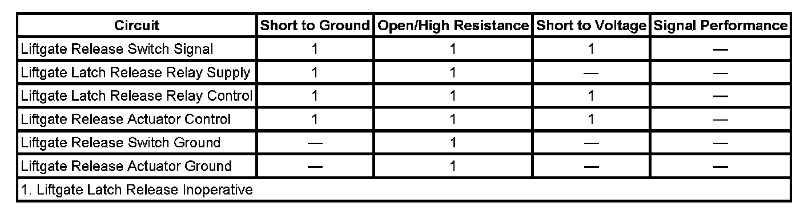

Hatch Release Inoperative
HATCH RELEASE INOPERATIVE
DIAGNOSTIC FAULT INFORMATION

Perform the Diagnostic System Check - Vehicle prior to using this diagnostic procedure. Initial Inspection and Diagnostic Overview
CIRCUIT/SYSTEM DESCRIPTION
The liftgate release switch is an input to the body control module (BCM). The BCM supplies battery voltage to the signal circuit and when the release switch is activated the signal circuit voltage goes low. The BCM controls the liftgate release actuator through the liftgate latch release relay. When the release switch signal is activated, the BCM enables the liftgate latch release relay by applying battery voltage to the liftgate latch release relay supply circuit and the relay is energized when the BCM grounds the liftgate latch release relay control circuit. When the relay is energized battery voltage is supplied to the liftgate release actuator through the liftgate release actuator control circuit.
CIRCUIT/SYSTEM VERIFICATION
1. Install a scan tool and display Liftgate Release Switch parameter in the BCM Inputs data list.
2. Ignition ON, the parameter should be active only when the release switch is activated.
- If the scan tool parameter does not display the actual switch state perform the Liftgate Release Switch Circuit Test.
3. Attempt to activate the Liftgate Release Actuator form the scan tool BCM output controls.
- If the liftgate release actuator cannot be activated using the scan tool output controls function, perform the Liftgate Release Output Circuit Test.
- If the release switch input and the actuator output both function properly, another BCM input may be preventing the liftgate release action from being performed.
CIRCUIT/SYSTEM TESTING
Liftgate Release Switch Circuit Test
1. Disconnect the BCM connector C6.
2. Connect a test lamp from battery voltage to the liftgate release switch circuit terminal in the harness connector.
3. Verify the test lamp is not illuminated while the release switch is inactive.
- If the test lamp remains illuminated, the signal circuit is shorted to ground or the switch contacts are shorted closed.
4. Verify the test lamp is illuminated, while the release switch is active.
- If the test lamp does not illuminate, an open is present in the signal circuit, switch or ground.
5. If the release switch circuits test normal, replace the BCM.
Liftgate Release Output Circuit Test
1. Remove the liftgate 15A fuse in the underhood fuse block and connect a fused jumper wire to actuator output fuse terminal in the fuse block.
2. Verify that the liftgate latch actuator activates when the other end of the jumper wire is momentarily touched to battery voltage.
- If the actuator does not activate, test the control and ground circuits for an open or short to ground. If the circuits test normal, replace the liftgate latch actuator.
3. Disconnect the underhood fuse block connector C5.
4. Connect a test lamp from the endgate latch relay supply voltage circuit terminal to the endgate latch relay coil control circuit terminal in the harness connector.
5. Ignition ON, verify that the test lamp illuminates when the liftgate latch release function is activated.
- If the test lamp does not illuminate, test the relay supply voltage and relay coil control circuits for an open or short to ground. If the circuits test normal, replace the BCM.
6. If the liftgate release output circuits test normal, replace the underhood fuse block.
REPAIR INSTRUCTIONS
Perform the Diagnostic Repair Verification after completing the diagnostic procedure. Verification Tests